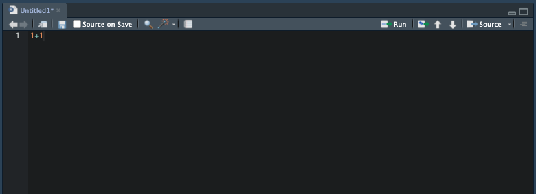

1 + 1[1] 2「2.Rの準備」で作成したR script（.R）にコードを記載していきます。たとえば、以下のように入力してみてください。その上で、「1+1」と記載した行にカーソルを置き、「command + enter」（Windowsの場合は「Ctrl + enter」）を押すと、コードが実行されます。左下のconsoleに1+1の計算結果が表示されるはずです。
1 + 1[1] 2
ちなみに、consoleに直接「1+1」と入力しても計算ができます。ただ、今後複雑なコードを書くときには、「.R」のコードとして保存しておく必要があるため、左上のコードウィンドウでコードを記載することをお勧めします。
このように、左上のコードウィンドウでコードを書き、「command + enter」（Windowsの場合は「Ctrl + enter」）で実行することで、分析を実行することができます。
ここでは、基本的な算術演算子を紹介します。
2 + 3[1] 52 - 3[1] -12 * 3[1] 62 / 3[1] 0.66666672 ^ 3[1] 810 %/% 3[1] 310 %% 3[1] 1sqrt(36)[1] 6abs(-90)[1] 90sum(1:10)[1] 55round(123.456,2)[1] 123.46round(x,y)のうち、yの方で、桁数を指定。負の数にすると10の位、100の位まで丸める。
round(123.456,-1)[1] 120log(10)[1] 2.302585デフォルトでは底をeとした自然対数。オプションでbase=yとすればyを底とした対数になる。
log(100, base=10)[1] 2exp(2)[1] 7.389056Rでは、何らかの値やベクトル（値が並んだもの）をオブジェクトに代入（格納）することができます。たとえば、xというオブジェクトに何らかの値やベクトルを格納します。
x <- 6これを実行すると、右上の「Environment」の箇所に、「x」というvalueが追加されます。これは、このR Projectに、6という数値が格納された「x」というオブジェクトが作成されたことを意味します。
これは、ベクトルでも同様です。Rでは、ベクトル（数値の列）を表す際に、c()という表現を使用します。たとえば、以下を実行してみてください。
y <- c(1,2,3,4,5)すると、「Environment」の欄に、「y」というオブジェクトが追加されます。この「y」には、「1,2,3,4,5」の連続する1から5の整数が格納されています。
あるいは、c(1,2,3,4,5)は、以下のようにも表現できます。連続する整数は、c(1:5)のように省略して表現できます。
z <- c(1:5)次に、代表的な比較演算子を紹介します。
x <- 5 # xに5を代入
x == 4[1] FALSEx != 4 # xには5が代入されている[1] TRUEx > 5 # xが5より大きいかどうか[1] FALSEx < 6 # xが6未満かどうか[1] TRUEx >= 5 # xが5以上かどうか[1] TRUEx <= 6 # xが6より小さいかどうか[1] TRUE次に、代表的な論理演算子を紹介します。
x <- 5 # xに5を代入
y <- 3 # yに3を代入
x == 5 & y == 3 # x=5かつy=3のときにTRUE、そうでないときにFALSE[1] TRUEx <- 5 # xに5を代入
y <- 3 # yに3を代入
x == 5 | y == 4 # x=5またはy=4のときにTRUE、そうでないときにFALSE[1] TRUEx <- 5 # xに5を代入
x %in% c(1:5) # xが、1~5の整数の中に含まれているかどうか？[1] TRUEx %in% c(9:12) # xが、9~12の整数の中に含まれているかどうか？[1] FALSEパイプ演算子：左側を右側の関数の最初の引数に渡す。
1:10 |> sum() # 1~10の整数のベクトルを、sum()（合計）に渡す[1] 55